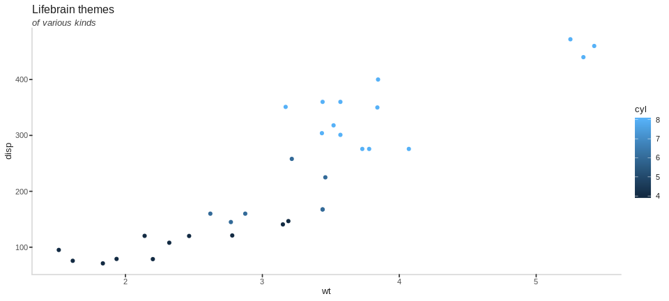
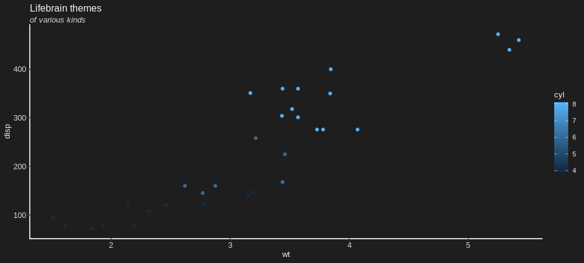
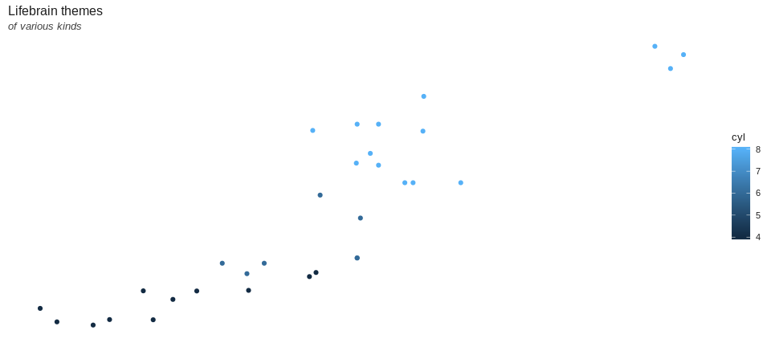
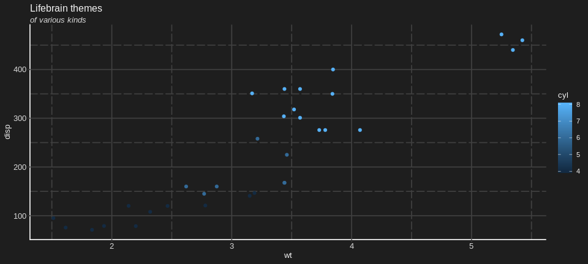
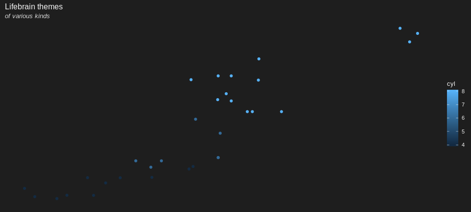
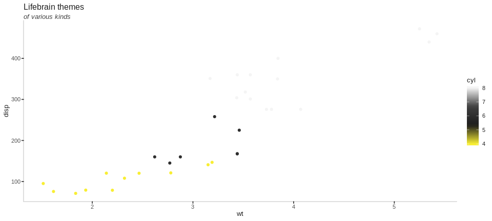
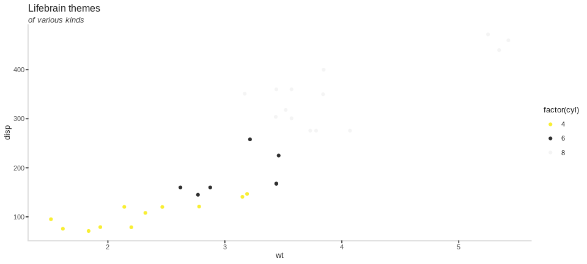
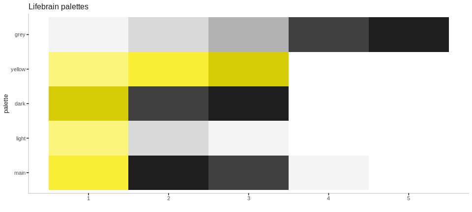
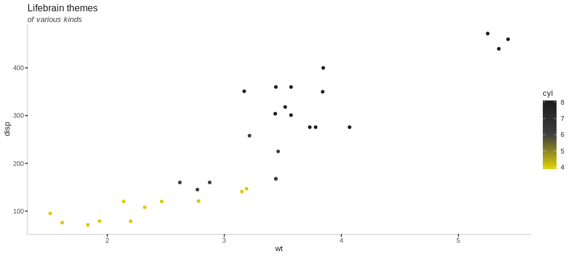
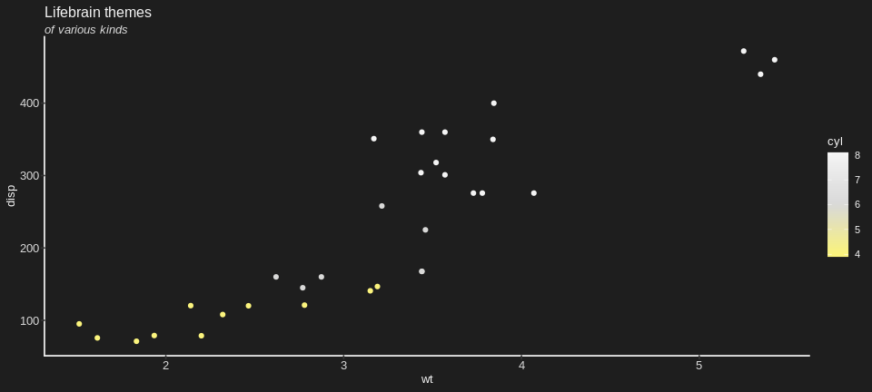

In the event of needing plots that have Lifebrain branding for presentations, reports etc. we have custom ggplot2 themes and colour scales to ensure that we have consistent branding. These are particularly suitable when using the rmarkdown-templates that also accompany this package.
Applying the Lifebrain themes to ggplot
The themes are quite minimal, applying mostly just the corrent font and colours to match out branding.
library(ggplot2)
library(dplyr)
p <- mtcars %>%
ggplot(aes(x = wt, y = disp, colour = cyl)) +
geom_point() +
labs(title = "Lifebrain themes",
subtitle = "of various kinds")
p +
theme_lifebrain()
There are variations around the main theme, to adapt to various possible scenarios and tastes, while maintaing a certain aesthetic



and there are also some pre-defined combinations of the above also.


Colour scales
Lifebrain scales
The colour scales work much the same way as standard ggplot scales do. The main difference is you need to be aware if the data your are colouring is discrete (categorical) or continuous, to turn on or off the discrete argument.

mtcars %>%
ggplot(aes(x = wt, y = disp, colour = factor(cyl))) +
geom_point() +
labs(title = "Lifebrain themes",
subtitle = "of various kinds") +
theme_lifebrain() +
scale_colour_lifebrain(discrete = TRUE) 
By default, the scales grab the “main” palette, which consists of the blue and green colours of our logo. There are also other variations


